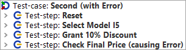
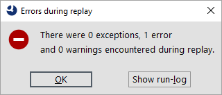

| Version 6.0.3 |
The second test-case will show us what happens when an error occurs during test execution.
|
|  | ||
|
| Figure 1.9: The Second Test-case | ||
Apart from the third test-step it is identical to the first test-case. So what does this one do?
Test-step: Grant 10% discount - Writes the value 10 into the discount field.
The 'Input' node is another basic action node and can be created directly via the QF-Test recording function.
|
| |||
|
| Figure 1.10: Details of the second Test-case | ||
Let's execute the second test-case:
This time a dialog shows up telling us that an error occurred.
|
|  | ||
|
| Figure 1.11: Error in the second test-case | ||
What happened? To find out we'll open the QF-Test run-log for error analysis.
An alternative approach for error analysis would be to execute the test-case again using the debugger. This will be explained in chapter Using the Debugger (Java).
| Last update: 9/6/2022 Copyright © 2002-2022 Quality First Software GmbH |